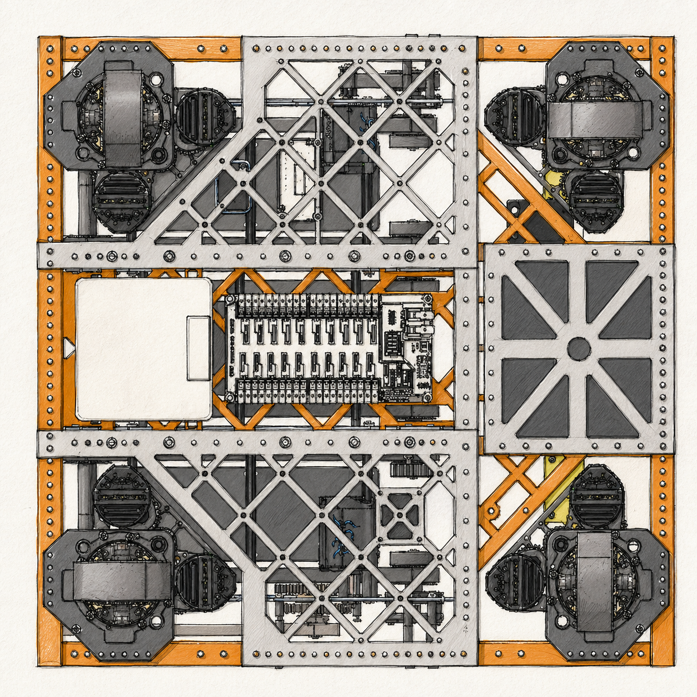
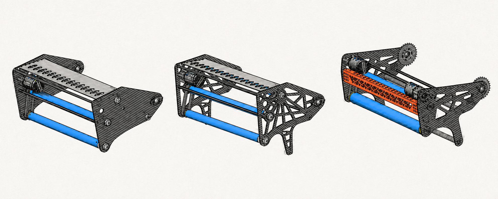
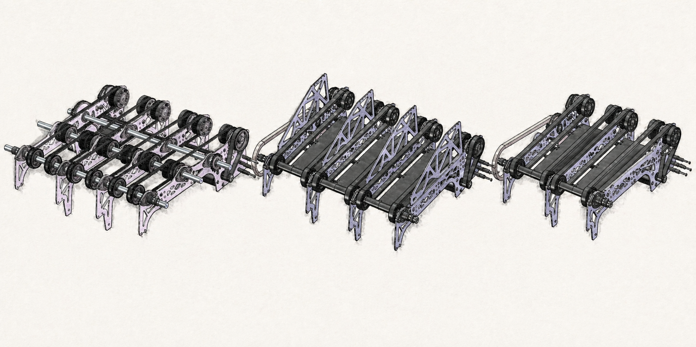
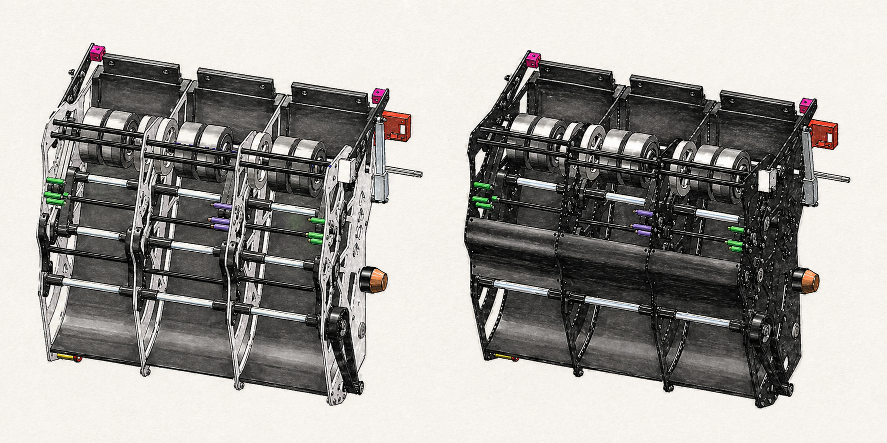
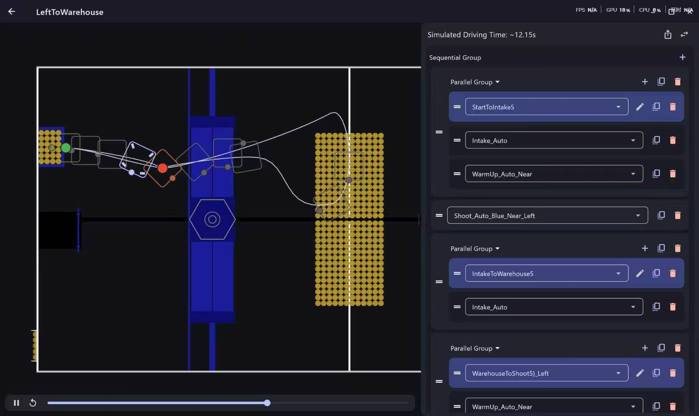
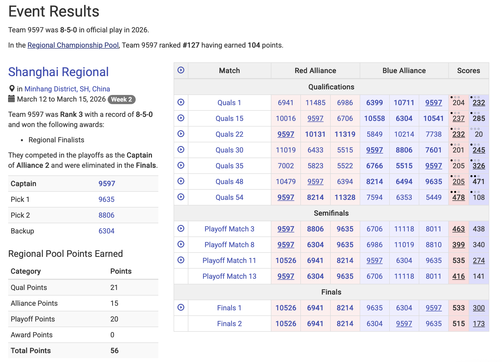

FIRST Robotics Competition Team 9597
Luban Robotics Builds Robots, Leaders, And Momentum.
We Are A Student-Led FRC Robotics Team Designing Competitive Robots While Learning Engineering, Software, Business, And Teamwork.

About Us
Built By Students, Supported By Mentors, Powered By Curiosity.
Team History
Luban Robotics builds a long-term learning pathway for students from age 6 to 18. Students grow through U9, U12, U15, and U18 stages while developing hands-on engineering, programming, teamwork, and competition experience over many years. Each season, we design, build, program, fund, and compete with a new robot in the FIRST Robotics Competition.
Mission
Our mission is to create a welcoming environment where students can explore STEM, develop leadership skills, and use technology to serve our community.
Our Values
- Student leadership
- Gracious professionalism
- Creative problem solving
- Equity, inclusion, and belonging
- Learning through iteration
Mechanical
Designs mechanisms, prototypes solutions, machines parts, and assembles the robot.
Electrical
Wires motors, sensors, pneumatics, control systems, and reliable power pathways.
Programming
Builds robot code, autonomous routines, dashboards, vision, and match strategy tools.
Business
Leads awards, media, sponsorships, budgeting, and team communications.
Robot & Engineering
Current Robot Design, Documented From Sketch To Competition.
2026 Robot: Luban Robotics 9597
STABLE
RELIABLE
EFFICIENT
Technical Focus
The robot is designed as one connected system: the drive train creates stable field positioning, the intake and feeder protect fast cycle speed, the column and shooter keep a consistent ball path, and the software layer uses vision, odometry, and PID control to support accurate movement and shooting.
- Ball Path: Open feeder geometry reduces compression and jams.
- Shooting: Column changes raised throughput from 6 BPS to 13 BPS.
- Serviceability: Modular layouts make wiring and repairs faster.
- Controls: Semi-automatic routines improve efficiency and consistency.
Engineering Notebook
Design Notes From Luban Robotics' Build Season.

Drive Train
Stable Movement And Field Adaptability
The drivetrain is designed for stable movement and reliable field adaptability, using a structured chassis with durable lightweight materials and modular wheels. The system ensures smooth and responsive driving during matches while maintaining strong structural stability.
Drive Train
Easy For Wiring
The drive train layout keeps electronics and wire paths accessible, making routing cleaner and reducing the chance of loose or tangled connections during maintenance.
Drive Train
Quick To Repair
A modular drive train helps the team inspect, remove, and replace parts quickly between matches so the robot can return to the field with less downtime.
Drive Train
Light Weight
Lightweight structure reduces unnecessary mass while keeping enough strength for collisions, obstacle traversal, and reliable match play.
Drive Train
Protection
Key wiring paths and electronics are protected from impacts, debris, and loose connections so the robot can stay reliable during hard matches.
Reliability
Protecting The RoboRIO And Wiring
In the previous version, we arranged the roboRIO facing upwards, which created several risks during competition. Dust, debris, and small metal particles can fall directly onto the ports and circuitry, increasing the chance of short circuits or connection failures. An upward-facing position also exposes wiring to accidental blockage or tangling, which can loosen connections during impacts or rapid movement. Additionally, debris buildup can reduce cooling efficiency, leading to overheating and performance instability. In a dynamic FRC environment, where robots experience collisions and field debris, protecting critical control components is essential.
Mounting the roboRIO facing downwards offers several important advantages in an FRC robot. It helps protect the ports and circuitry from dust, debris, and metal fragments, since gravity pulls particles away rather than into the device. This reduces the risk of short circuits and connection failures. A downward orientation also keeps wiring more secure, preventing cables from getting blocked, tangled, or accidentally pulled out during impacts. In addition, it improves overall durability in rough match conditions and helps maintain stable performance. By minimizing exposure to environmental hazards, a downward-facing roboRIO setup increases reliability and ensures consistent robot operation during competition.

Intake
From Three Rollers To Two
Our intake design went through several iterations, starting with a three-roller configuration and evolving into a two-roller system inspired by Team 1678 Citrus Circuits.
Initially, the three-roller design aimed to improve control over game pieces by adding an extra stage for guiding and compressing objects. In theory, this would increase stability during intake and reduce the chance of pieces bouncing out. However, during testing, we found that this configuration introduced several issues. The additional roller increased mechanical complexity, leading to higher friction and more points of failure. It also reduced overall intake speed because the game piece had to pass through multiple contact points, slowing down the transfer process. As a result, the efficiency of picking up and feeding game pieces was lower than expected.
To address this, we simplified the system to a two-roller intake, following a proven design approach used by top teams. This configuration reduces friction, increases intake speed, and improves reliability. With fewer components, the system is lighter, easier to maintain, and more consistent during gameplay. This iteration demonstrates the importance of simplifying designs to achieve higher performance and efficiency. This increases intake speed and overall efficiency during matches. The simpler design also improves reliability, as there are fewer components that can fail or require adjustment.
1.5s / 40
1s / 15
Intake
Fast Pace
The intake is designed to move game pieces quickly with fewer contact points, supporting faster cycles and a stronger match rhythm.
Intake
Easy Method
A simpler two-roller method reduces complexity, lowers friction, and makes tuning and maintenance easier for students during build season and competition.

Feeder
Opening The Feeder To Reduce Jams
Our feeder uses a multi-lane roller system to move game pieces efficiently. However, during testing, we identified a key risk: four balls can align in a single row, causing them to compress against each other and jam inside the feeder. The original design included PC, or polycarbonate, sheets to separate and guide the balls into lanes. While this improved organization, it also created tight spacing, increasing the chance of balls getting stuck when multiple pieces entered at once.
By removing the PC separators, the feeder becomes more open and flexible. Balls are no longer forced into strict lanes, allowing them to naturally adjust their positions. This reduces compression and significantly lowers the chance of jamming. The system also becomes simpler, lighter, and easier to maintain, with fewer parts that can break or misalign.
Feeder
Efficient
The feeder moves game pieces through the robot with fewer jams and less delay, helping the robot keep a faster scoring rhythm during matches.
Feeder
Strong Structure
The structure supports the rollers and guides firmly, reducing flex and keeping the mechanism stable when multiple game pieces enter at once.
Feeder
Flexible
The more open feeder path lets game pieces adjust naturally instead of getting trapped in tight lanes, making the system easier to recover and tune.

Column & Shooter
Closing The X60 Motor Gap
During testing of our column and shooter system, we identified a key issue: game pieces could get stuck in the gap near the X60 motor area. This gap created an unintended pocket where balls could catch, disrupting flow and reducing shooting consistency. We also changed the shapes of the side PC sheets to guide the ball to the center.
To solve this, we added a front blocker to guide the balls and prevent them from entering this gap.
The front blocker significantly improved performance. By eliminating the gap, balls are now guided smoothly into the shooter path, reducing jams and interruptions. This created a more continuous and controlled flow of game pieces. As a result, our ball throughput increased from 6 BPS to 13 BPS, more than doubling efficiency. The system is now more reliable under high-speed operation, which is critical during matches where rapid scoring is required.
Column & Shooter
Increase BPS
The improved blocker and guide shape increased ball throughput from 6 BPS to 13 BPS, giving the shooter a much faster and more consistent feed rate and shooting speed.
Column & Shooter
Smooth Path
Closing the gap near the X60 motor creates a smoother path into the shooter, reducing stuck balls, sudden stops, and unstable firing rhythm.
Column & Shooter
Multi-Angle
The shooter path supports aiming from multiple angles, helping the robot adapt to different field positions and scoring choices.
Column & Shooter
3 Separate Paths
Three separated guide paths help organize game pieces before shooting, reducing crowding and improving the flow from the column into the shooter.

Autonomous
Coordinated Scoring Paths
We chose this specific route to cooperate and coordinate better with our teammates. Meanwhile, it is equally essential for us to secure the highest possible points while maintaining smooth teamwork.
We manage speed changes by using PID control for more accurate positioning. This precise setting helps us steadily control and maintain stable rotation speed throughout the whole process. It effectively avoids sudden speed changes and keeps the rotation smooth and consistent for stable operation.
The machine identifies and calculates its real-time position through the camera vision system and motor odometer data. After precise aiming and systematic calibration, it analyzes and references the previously recorded operational parameters to accurately predict and adjust the optimal pitch angle and rotating speed.
We improve overall efficiency by accelerating operations in safe and non-critical sections, while adopting more optimized yet fully secure parameter tuning.
The current automatic scoring range stays steadily between 40 and 90, varying according to different operational choices. All performance modes remain highly stable and reliable in actual operation.
For our upcoming competition in Houston, our main goal is to secure a solid average overall performance. Since this is our first time taking part in such an event here, we prioritize learning and accumulating practical experience above high rankings. We aim to observe, communicate and improve ourselves throughout the whole competition.
Autonomous
High Scoring (50+ Points)
The autonomous route is designed to create strong scoring potential, with operating choices that can support 50+ points when execution is stable.
Autonomous
High Cooperation
The path is planned to coordinate with alliance partners, reducing traffic and helping each robot use its strongest scoring role during autonomous play.
Autonomous
Wide Choice
Multiple path and parameter choices give drivers and programmers more options for different alliance plans, field positions, and match strategies.
Problem
Identify field tasks, scoring priorities, time limits, and defensive pressure.
Prototype
Test simple mechanisms quickly using plywood, 3D prints, scrap parts, and data.
Iterate
Compare designs, improve reliability, reduce weight, and simplify maintenance.
Compete
Use match scouting, pit repairs, and driver feedback to keep improving.
Competitions
Events, Results, Awards, And Lessons Learned.

Shanghai Regional
Team 9597 finished official play with an 8-5-0 record. At Shanghai Regional, the team ranked 3rd, earned the Regional Finalists award, and competed in playoffs as the captain of Alliance 2 before being eliminated in the Finals.
Alliance 2
- Captain
- 9597
- Pick 1
- 9635
- Pick 2
- 8806
- Backup
- 6304
Regional Pool Points
- Qual Points
- 21
- Alliance Points
- 15
- Playoff Points
- 20
- Award Points
- 0
- Total Points
- 56
Sponsors
Thank You To The Partners Who Make Our Season Possible.
Sponsorship helps students access tools, parts, competition travel, safety equipment, registration, team materials, and mentorship opportunities.
Sponsor impact:
Every contribution turns into student learning: more prototypes tested, more robot
improvements completed, and more students prepared for future careers.
Gallery
Build Season, Competitions, Robot Details, And Team Moments.
 Watch Match Video
Watch Match Video
Blog & Updates
Build Season Notes And Competition Recaps.
Week 1 · Kickoff
Strategy, Rules, And First Prototypes
Students analyzed the game manual, created scoring priorities, and tested first-pass mechanism ideas.
Read MoreWeek 4 · Integration
Importance Of Efficiency
The team reflected on time management, repeated testing, and preparing for Houston.
Read MoreEvent Recap
What We Learned At Our First Regional
The team reflected on reliability, match strategy, testing, teamwork, and resilience.
Read More
Strategy & Rules
Fuel Scoring, Penalties, Match Phases, And Robot Constraints
For a fuel to count as scored, it must fully enter the opening at the top of the hub and be processed through the system. Balls that bounce out or fail to fully enter the hub are not counted. Therefore, accuracy and consistency in shooting mechanisms are critical for maximizing scoring efficiency.
Penalties play a significant role in match outcomes and should be carefully avoided. Common penalties include entering protected opponent zones, interfering with robots during critical actions such as climbing, and violating human player restrictions, such as reaching beyond designated boundaries. Minor violations, known as fouls, typically award around 5 points to the opposing alliance, while more serious violations, or technical fouls, can award approximately 15 points. Severe or repeated infractions may result in yellow or red cards, which can negatively impact match results or team rankings. The most likely penalties in gameplay include illegal defensive positioning, interference during climbing, and boundary violations by human players.
Strategically, teams must balance scoring efficiency with defensive awareness and cooperation. High-probability scoring methods include short-range shooting into the hub and fast cycling of fuels. Defensive strategies can include blocking opponent paths to the hub or disrupting their ability to collect fuel in the neutral zone. However, defensive play must be executed carefully to avoid entering protected areas and incurring penalties.
A typical match can be divided into three main phases. The first 20 seconds consist of the autonomous period, where robots operate independently to score points and potentially begin climbing. This is followed by the teleoperated period, lasting for 2 minutes and 20 seconds, during which drivers control the robots to collect and score fuel. During this phase, hub activation alternates between alliances, requiring teams to adapt their strategies dynamically. In the final 30 seconds, known as the endgame, both hubs become active, and teams use this last period of time to score as much as possible.
Team coordination is another critical factor for success. Strong, high-scoring robots should focus on scoring, while their partners support them by supplying fuel or playing defense. Medium-level robots can balance between scoring and assisting roles. Lower-scoring robots can still contribute significantly by focusing on defense, transporting game pieces, or clearing space for alliance partners. Effective communication and role assignment within the alliance can greatly improve overall performance.
Finally, robot design must comply with strict size and weight constraints. Robots must weigh no more than approximately 125 pounds, including the battery and bumpers. At the start of the match, the robot must fit within the defined frame perimeter, although extensions are allowed during gameplay if they comply with the rules. Safety is a top priority, and robots must be designed to avoid damaging the field or posing risks to other participants. All electrical and mechanical systems must adhere to official FRC regulations.
Reflection
Importance Of Efficiency
Through this experience, we have learned an important lesson. First of all, work efficiency is extremely important in every task. We should arrange our steps reasonably and make good use of time to complete tasks in a better way. Besides, we also realize that plenty of tests are necessary. Only by doing more repeated tests can we find hidden problems in advance, correct our mistakes quickly and make our work more stable and reliable. In the future, we will keep improving our efficiency and take every test seriously to get better results.
For our upcoming competition in Houston, our main goal is to secure a solid average overall performance. Since this is our first time taking part in such an event here, we prioritize learning and accumulating practical experience above high rankings. We aim to observe, communicate and improve ourselves throughout the whole competition.
Regional Reflection
What We Learned At Our First Regional
Throughout the regional event, we learned many valuable lessons from the past regional competition, both technically and as a team. One of the biggest takeaways was the importance of reliability. Although our robot had strong design ideas, small mechanical issues and inconsistencies affected our performance during matches. This taught us that a simple, robust system is often better than a complex one that is hard to maintain.
We also improved our understanding of game strategy. During qualification matches, we realized that communication with alliance partners is key. Clear planning before each match helped us perform more effectively and avoid confusion on the field. In addition, we learned to adapt quickly when things did not go as expected, which is a crucial skill in competition.
From an engineering perspective, we recognized the need for better testing and iteration. Some subsystems, such as our intake and feeder, required more real-match testing to ensure efficiency and prevent jamming. This experience will guide our future design process.
Finally, the regional helped strengthen our teamwork and resilience. Even when facing challenges, we supported each other and stayed focused. Overall, we left the competition more experienced, more prepared, and motivated to improve.
Contact
Connect With Luban Robotics.
Team Contacts
Email: 51155585@qq.com
Instagram: @9597_lubanrobotics
YouTube: @9597LubanRobotics
School: Kclub